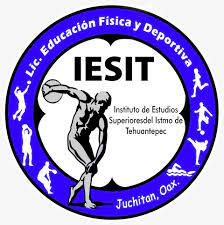
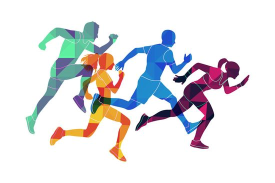

|  |
Objetivo de la CarreraFormar profesionistas con un sólido domino teórico-práctico de los conocimientos relacionados con el ejercicio y el deporte y sus tendencias actuales, capaces de desarrollar con eficiencia, procesos de enseñanza-aprendizaje administración, instrumentación, investigación y desarrollo de la cultura física y deporte. |
Perfil de la CarreraLa Licenciatura en Educación Física y Deportiva está diseñada para desarrollar profesionistas con vocación y ética en la cultura del deporte y la salud corporal, mediante una preparación teórico & practico en el desarrollo de la habilidad física y las capacidades humanas, que estimulan su autodisciplina y el trabajo en equipo, promoviendo el desarrollo de la cultura física en nuestra región y en nuestro país. |
 |
Perfil de EgresoEl egresado estará capacitado para llevar a cabo la investigación, planeación, administración e instrumentación de programas de educación física, deportes y recreación; asimismo, dominará y aplicará las teorías pedagógicas, psicológicas y didácticas que le permitirán el ejercicio de la docencia, con un enfoque filosófico humanista, en correspondencia con los problemas sociales y económicos de la Región del Istmo de Tehuantepec y el País. Además, reconocerá las disciplinas relativas al conocimiento del hombre y de su cuerpo como puntos complementarios a la educación física que contribuyan a su desarrollo integral El profesional en la Educación Física y Deportiva se relaciona básicamente con: La medicina, ciencias de la educación, administración de empresas, psicología y sociología. Podrá desempeñarse en:
|
Déjanos tus datos de contacto y nos comunicaremos contigo